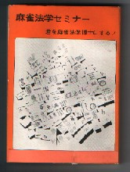
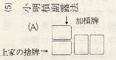

（４１）槓子の副露法
ブランドblogのese-tori に「加カンのさらし方」（2007-08-11）というコラムがある。要点をコピーさせてもらうと。近代麻雀誌に連載中の漫画「打姫オバカミーコ」のある一話で、新人女子プロが加カンしたのに縦向きにフーロして「これだと大ミンカンのさらし方になる」と叱られるというシーンがあった。加カンではポンの時点で横向きにした牌の上にもう一枚横向きに置く、というのが正式な加カンのフーロだというのだ。一方で大ミンカンの場合は4枚のうち1枚だけを横向きにする。
（中略）加カンでも大ミンカンと同じフーロにすることはなぜ許されないのだろうか。どちらも符は同じだ。捨て牌の枚数だって変わらない。どこから鳴いたかも横向き牌の位置で示すことができる。たしかに大明槓と小明槓はできるまでの過程が異なるだけ。できてしまえば符は同じ。ではどうしてこういう形？と云えば、いちおう理由がある。σ(-_-)が麻雀を覚えた昭和30年代末期、槓子については暗槓も含めてさまざまな副露法が行われていた。じっさいチーにしても、チー牌を真ん中において副露する人もいた（こんな感じ →）。そして暗槓も、次の３種類が。
（１）（２）
（３）
今でも（２）とか（３）で副露する人がいるかも知れないが、いずれにしても２枚を裏向けにするので問題は起きない。じっさい（３）は一寸恰好いいので、σ(-_-)もまねしたことがある。しかしそれでも やはり（１）が主流だった。もちろん現在は（１） で落ち着いている（と思われ）。そして大明槓は、こんな感じだった。（Ａ）上家からの大明槓
（Ｂ）対面からの大明槓 （B1）または（B2）
（Ｃ）下家からの大明槓
まぁこれも一応これでいい。しかし問題は小明槓。小明槓はポンしてある牌の左側に１枚加えるので、そのまま行うと次の形となる。
（Ｘ）上家からのポンに加槓
（Ｙ）対面からのポンに加槓
（Ｚ）下家からのポンに加槓
すると（Y）と（Ｚ）は問題ないが、(X)では上家が切ったが対面が切った形と同一となる。すると対面は切ってもいない牌でフリテンになりかねない。もちろん対面からの大明槓を常に（B２）形とすれば、いちおう （Ｘ）と区別できる。しかしそれでも形は似る。またそんなところまで気を配って副露するプレーヤーもいない。そこで実際にフリテントラブルが起きたことがあった。しかし滅多に起きることでもないので、この問題はなおざりにされていた。
学生の頃、天野大三という麻雀界の先駆者が、「25才で麻雀入門書を出版した」という記述をみた。23才のとき、「よし、その記録を破ってやろう」と思った。いや、破ったってどうということはないけど、とにかくそう思った。そいで麻雀入門書というか、ルール解説書みたいなものを書き出した。で昭和45年の12月、 めでたく？24才で自費出版したのが この本（麻雀書ベスト10の番外書として収録してある）。
サブタイトルに「君を麻雀法学博士にする」と書いてあるがウソ....(ノд｀) 麻雀書ベスト10の寸評にも、ちゃんと「雀学度 Low、影響度 Low」とはっきり書いてある.... しかし今となっては頒布の予定はないので、入難度 S（入手難度スーパー）はホント（^-^；
で この本で、トラブルのタネになりかねない小明槓について、以前から考えていた“加槓牌を横向きになっているツケ牌の上に、同じく重ねる”という副露法を図示した（縦置きでも区別はつくが、落ち着きが悪い）。
これなら対面からの大明槓がB1形であろうがB2形であろうが、上家の捨て牌がらみのトラブルが起きることはない。つまりこの副露形は上家がフリテンしたと誤解されることを避けるためであって、加槓牌が開槓者のフリテンになっているかどうか確認するために考案したわけではない。
第一 この副露法を考えたとき、「加槓牌が開槓者のフリテンの対象牌になる」などというルールは無かった。いや、すでにそういうことを主張している人もいたような気がしないでもないが（なんせ、むかしの記憶なので....）、別にそのためにこの副露法を考えたわけではない。ましてや搶槓（チャンカン）の有無や嶺上（リンシャン）ツモ時の責任払いなどは、カン発生時のときだけの問題なので副露法には関係ない。
ついでながら以前、当サイトのbbsで「大明槓、小明槓という表現は誰が言い出しっぺ？」みたいな話があった。それはσ(-_-)がこの副露法について書いているとき、いちいち「暗刻に他家の牌を加えてできた明槓」とか、「明刻に加槓してできた明槓」などと説明するのがわずらわしかったので、一言で済む用語として考えた表現。
いずれにしてもこの副露法、頒布も少ない自費出版の本に記載してあるだけなら、世に広まることもなかった（かもしれない）。ところがやがてσ(-_-)の師匠が新しくリーチ麻雀団体を結成した。数年後、きちんとした全文ルールを作ることになり、σ(-_-)もルール委員に選ばれた。とうぜんこの副露法を団体のルールに図示して採用した。
20支部ほどある それなりの規模の団体であったが、そこではすべてこの副露法が行われる。またσ(-_-)は他の麻雀団体の幹部とも交流があった。そんな関係で、後日 そちらの団体でも正式な方法として採用された。さらに今日ではいろんな団体のリーダーとなっているが、当時はまだ若手と呼ばれる複数のプレーヤーと交流があった。そんなところから大明槓、小明槓という表現とともに、この副露法が自然に普及した感じ。
百貫雀 投稿日：2007/12/01(Sat)
こんにちは。
小明槓については、私もそのように教わりました。
この方法が、どういうルートで伝わったか考えてみると面白そうです。
対面からの大明槓については、以下のように伝わって(笑)ます。
三枚の縦向き牌の上の段に、横向き牌が一枚乗る形です。
お宿の「マナーの色々」にも、偉そうにこれが正解だとしています。
間違っているようなら訂正しますが、正直、今さらって感じです。だって、１９９７年には、浅見さんは、「マナーの色々」に目を通した筈です。
責任を取ってください。
じゃなくって、この方式、どう、思われますか？
あさみ 投稿日：2007/12/02(Sun)ども、百貫雀さん。(^-^)/
じつはσ(-_-)が「対面からの大明槓」について、小明槓とともに考案したのがこの形。とうぜん「麻雀法学セミナー」の中では、この形が例示してあります。そのせいかかどうか分かりませんが、この形も多少は普及したと思います。しかし数年後の団体ルール作成のときには採用されませんでした。またその流れで他団体のルールでも採用されませんでした。σ(-_-)としては ちと残念でしたが、ま、大明槓と小明槓の判別というのが重要な点だったので、ルール会議の時には強く主張しませんでした。
それでもσ(-_-)はこの方法でプレーしていました（それこそＦMAJANでも）。しかし普及率も大したことはなかったように思いましたし、今回のコラムのメインテーマも小明槓の副露形。そこでこれについて言及しなかった次第。（^-^；